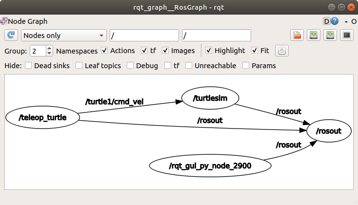
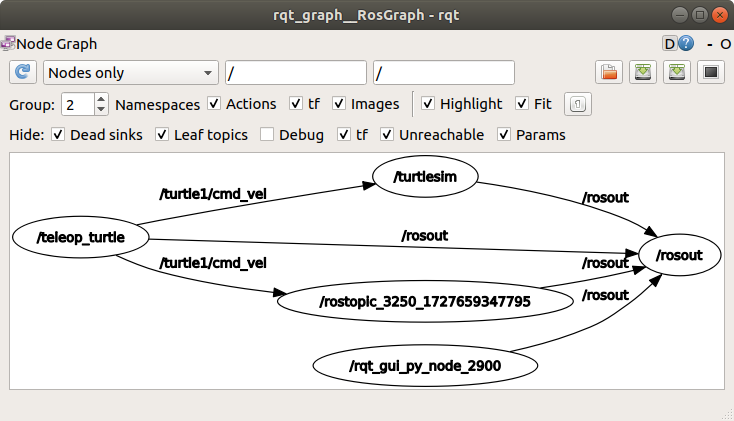
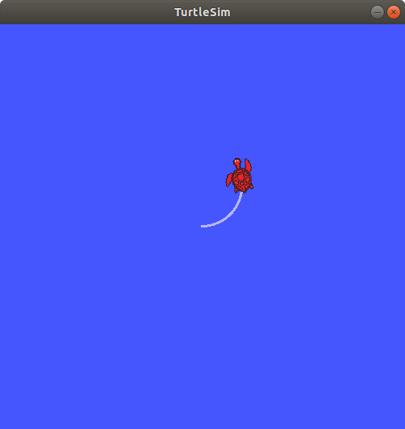
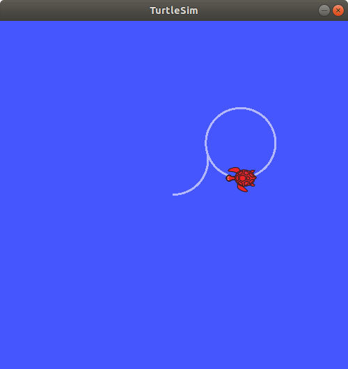
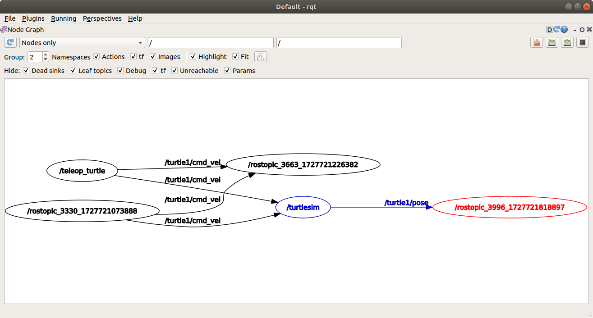
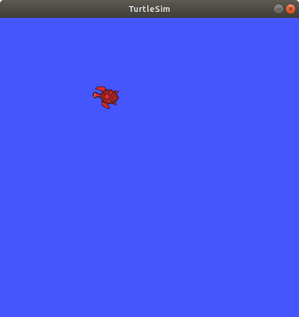
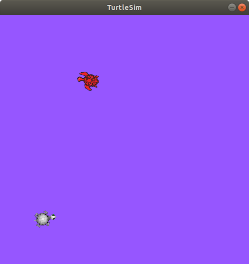

Lab 2 : ROS Nodes, Topics, Services, Parameters, Actions
Seneca Polytechnic AIG240 Robotics
Introduction
An overview of some computation graph concepts:
- Node: an executable representing an individual ROS software process
- Topic: nodes can publish messages to a topic and/or subscribe to a topic to receive messages
- Message: a ROS datatype used to exchange data between nodes
Nodes in ROS
Each node in ROS should be responsible for a single, modular purpose, i.e., controlling the wheel motors or publishing the sensor data from a laser range-finder. Each node can send and receive data from other nodes via topics, services, actions, or parameters. A full robotic system is comprised of many nodes working in concert.

Figure 2.1 ROS Nodes Graph
Topics in ROS
ROS breaks complex systems down into many modular nodes. Topics are a vital element of the ROS graph that act as a bus for nodes to exchange messages.

Figure 2.2 ROS Topic Graph
A node may publish data to any number of topics and simultaneously have subscriptions to any number of topics.

Figure 2.3 ROS Topic Graph (One-to-Many)
Topics are one of the main ways in which data is moved between nodes and therefore between different parts of the system.
Service in ROS
Services are another method of communication for nodes in the ROS graph. Services are based on a call-and-response model versus the publisher-subscriber model of topics. While topics allow nodes to subscribe to data streams and get continual updates, services only provide data when they are specifically called by a client.

Figure 2.4 ROS Service Single Node

Figure 2.5 ROS Service Multiple Node
Parameter in ROS
A parameter is a configuration value of a node. You can think of parameters as node settings. A node can store parameters as integers, floats, booleans, strings, and lists. In ROS, each node maintains its own parameters.
Procedures
Understanding ROS Nodes
-
Open a terminal to run ROS using
roscoreand another terminal to run turtlesim. The commandrosrun [package_name] [node_name]launches an executable from a package. We need the package name to beturtlesimand the executable name to beturtlesim_node.roscoreThen, in a new terminal:
rosrun turtlesim turtlesim_node -
To find the node names, the
rosnode listcan be used.rosnode listwill show you the names of all running nodes. This is especially useful when you want to interact with a node, or when you have a system running many nodes and need to keep track of them.Open a new terminal while
/rosoutand/turtlesimis still running and enter the following command:rosnode listThe terminal will return the node name:
/rosout /turtlesim -
Open another new terminal and start the teleop node with the command:
rosrun turtlesim turtle_teleop_key -
Return to the terminal where you ran
rosnode listand run it again. You will now see the names of three active nodes:/rosout /turtlesim /teleop_turtle -
Remapping allows you to reassign default node properties, like node name, topic names, service names, etc., to custom values. Let’s open another
/turtlesimnode and reassign the name to/my_turtle. In a new terminal, run the following command:rosrun turtlesim turtlesim_node __name:=my_turtle -
Return to the terminal where you ran
rosnode list, and run it again, you will see four node names:/my_turtle /rosout /turtlesim /teleop_turtle -
To access more information about a node, use the following command:
rosnode info [node_name]. To examine your latest node,my_turtle, run the following command:rosnode info /my_turtlerosnode inforeturns a list of subscribers, publishers, services, and actions. i.e. the ROS graph connections that interact with that node. The output should look like this:-------------------------------------------------------------------------------- Node [/my_turtle] Publications: * /rosout [rosgraph_msgs/Log] * /turtle1/color_sensor [turtlesim/Color] * /turtle1/pose [turtlesim/Pose] Subscriptions: * /turtle1/cmd_vel [geometry_msgs/Twist] Services: * /clear * /kill * /my_turtle/get_loggers * /my_turtle/set_logger_level * /reset * /spawn * /turtle1/set_pen * /turtle1/teleport_absolute * /turtle1/teleport_relative -
Run the same command on the
/teleop_turtlenode and see the difference.
Understanding ROS Topics
-
Close the
/my_turtleterminal so only the/turtlesimand/teleop_turtleare open. -
We will use
rqt_graphto visualize the changing nodes and topics, as well as the connections between them. Open a new terminal and enter the command:rqt_graphYou can also open rqt_graph by opening
rqtand selecting Plugins > Introspection > Node Graph.
Figure 2.6 ROS rqt_graph
You should see the above nodes and topics, as well as two actions around the periphery of the graph (let’s ignore those for now). If you don't see the nodes and topics, click the refresh button. If you hover your mouse over the topic in the center, you’ll see the colour highlighting like in the image above.
The graph shows how the
/turtlesimnode and the/teleop_turtlenode are communicating with each other over a topic. The/teleop_turtlenode is publishing data (the keystrokes you enter to move the turtle around) to the/turtle1/cmd_veltopic, and the/turtlesimnode is subscribed to that topic to receive the data.The highlighting feature of
rqt_graphis very helpful when examining more complex systems with many nodes and topics connected in many different ways.rqt_graphis a graphical introspection tool. Now we’ll look at some command line tools for introspecting topics. -
Open another terminal and run the
rostopic listcommand to return a list of all the topics currently active in the system:/rosout /rosout_agg /statistics /turtle1/cmd_vel /turtle1/color_sensor /turtle1/pose -
Running the code with an additional argument
rostopic list -vwill return more details on the topics with the topic type appended in brackets:Published topics: * /turtle1/color_sensor [turtlesim/Color] 2 publishers * /turtle1/cmd_vel [geometry_msgs/Twist] 1 publisher * /rosout [rosgraph_msgs/Log] 4 publishers * /rosout_agg [rosgraph_msgs/Log] 1 publisher * /turtle1/pose [turtlesim/Pose] 2 publishers Subscribed topics: * /turtle1/cmd_vel [geometry_msgs/Twist] 2 subscribers * /rosout [rosgraph_msgs/Log] 1 subscriber * /statistics [rosgraph_msgs/TopicStatistics] 1 subscriberThese attributes, particularly the type, are how nodes know they’re talking about the same information as it moves over topics.
If you’re wondering where all these topics are in
rqt_graph, you can uncheck all the boxes under Hide:
Figure 2.7 ROS rqt_graph with everything unhidden
-
To see the data being published on a topic, use:
rostopic echo [topic]. Since we know that/teleop_turtlepublishes data to/turtlesimover the/turtle1/cmd_veltopic, let’s useechoto introspect that topic:rostopic echo /turtle1/cmd_velReturn to the terminal where
turtle_teleop_keyis running and use the arrows to move the turtle around. Watch the terminal where yourechois running at the same time, and you’ll see position data being published for every movement you make:linear: x: 2.0 y: 0.0 z: 0.0 angular: x: 0.0 y: 0.0 z: 0.0 --- -
Return to rqt_graph and unhide the Debug box, hide everything else, then refresh.

Figure 2.8 ROS rqt_graph with debug node
A new node
/rostopic_XXXXXis created by theechocommand we just ran (the number might be different). Now you can see that the publisher is publishing data over thecmd_veltopic, and two subscribers are subscribed to it (the two arrows with/turtle/cmd_vel). -
Nodes send data over topics using messages. Publishers and subscribers must send and receive the same type of message to communicate. The topic types we saw earlier after running
rostopic list -vlet us know what message type is used on each topic. Recall that thecmd_veltopic has the typegeometry_msgs/Twist. This means that in the packagegeometry_msgsthere is a type calledTwist. Alternatively, We can runrostopic type [topic]to see the topic type. We can also runrosmsg show [msg type]on the type to learn its details. Specifically, what structure of data the message expects.rostopic type /turtle1/cmd_velYou should get:
geometry_msgs/TwistLook at the details of the message using
rosmsg:rosmsg show geometry_msgs/TwistFor the message type from above, you should see:
geometry_msgs/Vector3 linear float64 x float64 y float64 z geometry_msgs/Vector3 angular float64 x float64 y float64 zThis tells you that the
/turtlesimnode is expecting a message with two vectors,linearandangular, of three elements each. If you recall the data we saw/teleop_turtlepassing to/turtlesimwith the echo command earlier. -
Now that you have the message structure, you can publish data to a topic directly from the command line using:
rostopic pub [topic] [msg_type] [args]. The[args]argument is the actual data you’ll pass to the topic, in the structure you just discovered in the previous section.It’s important to note that this argument needs to be input in YAML syntax. Input the full command like so:
rostopic pub -1 /turtle1/cmd_vel geometry_msgs/Twist -- '[2.0, 0.0, 0.0]' '[0.0, 0.0, 1.8]'--onceis an optional argument meaning “publish one message then exit”.You will see your turtle move like so:

Figure 2.9 The turtle starts moving in a circle
This is a pretty complicated example, so lets look at each argument in detail.
-
This command will publish messages to a given topic:
rostopic pub -
This option (dash-one) causes
rostopicto only publish one message then exit:-1 -
This is the name of the topic to publish to:
/turtle1/cmd_vel -
This is the message type to use when publishing to the topic:
geometry_msgs/Twist -
This option (double-dash) tells the option parser that none of the following arguments is an option. This is required in cases where your arguments have a leading dash -, like negative numbers.
-- -
As noted before, a
geometry_msgs/Twistmsg has two vectors of three floating point elements each:linearandangular. In this case,'[2.0, 0.0, 0.0]'becomes the linear value withx=2.0,y=0.0, andz=0.0, and'[0.0, 0.0, 1.8]'is the angular value withx=0.0,y=0.0, andz=1.8. These arguments are actually in YAML syntax, which is described more in the YAML command line documentation.'[2.0, 0.0, 0.0]' '[0.0, 0.0, 1.8]'
-
-
In order to continuously operate the turtle (and commonly a real robot which it is meant to emulate) require a steady stream of commands. So, to get the turtle to keep moving, you can run:
rostopic pub /turtle1/cmd_vel geometry_msgs/Twist -r 1 -- '[2.0, 0.0, 0.0]' '[0.0, 0.0, -1.8]'The difference here is the removal of the
-1(for--once) option and the addition of the-r 1(for--rate 1) option, which tellsrostopic pubto publish the command in a steady stream at 1 Hz.
Figure 2.10 The turtle moving in a circle
-
Refresh
rqt_graphto see what’s happening graphically. You will see a newrostopic pub ...node (/rostopic_3330in the figure) is publishing over the/turtle1/cmd_veltopic, which is being received by both therostopic echo ...node (/rostopic_3663in the figure) and the/turtlesimnode now.
Figure 2.11 ROS rqt_graph of turtle moving in a circle
-
Next, in a new terminal, run
echoon theposetopic and recheckrqt_graph:rosopic echo /turtle1/pose
Figure 2.12 ROS rqt_graph of turtle moving in a circle with pose
You can see that the
/turtlesimnode is also publishing to theposetopic, which the new echo node has subscribed to.
Understanding ROS Services
-
Leave
roscore,rosrun turtlesim turtlesim_nodeandrosrun turtlesim turtle_teleop_keyopen and close all the other terminal. -
Open a new terminal and run the
rosservice listcommand to return a list of all the services currently active in the system:/clear /kill /reset /rosout/get_loggers /rosout/set_logger_level /spawn /teleop_turtle/get_loggers /teleop_turtle/set_logger_level /turtle1/set_pen /turtle1/teleport_absolute /turtle1/teleport_relative /turtlesim/get_loggers /turtlesim/set_logger_levelLet's look more closely at the turtlesim-specific services,
/clear,/kill,/reset,/spawn,/turtle1/set_pen,/turtle1/teleport_absolute, and/turtle1/teleport_relative. You may recall interacting with some of these services using rqt. -
Services have types that describe how the request and response data of a service is structured. Service types are defined similarly to topic types, except service types have two parts: one message for the request and another for the response. To find out the type of a service, use the command:
rosservice type [service]Let’s take a look at turtlesim’s
/clearservice. In a new terminal, enter the command:rosservice type /clearWhich should return:
std_srvs/EmptyThe
std_srvs/Emptytype means the service call sends no data when making a request and receives no data when receiving a response. -
If you want to find all the services of a specific type, you can use the command:
rosservice find [type_name]. For example, you can find all theEmptytyped services like this:rosservice find std_srvs/EmptyWhich will return:
/clear /reset -
You can call services from the command line, but first you need to know the structure of the input arguments by using
rossrv show [type_name]. Try this on the/clearservice’s type,std_srvs/Empty:rossrv show std_srvs/EmptyWhich will return:
---The
---separates the request structure (above) from the response structure (below). But, as you learned earlier, thestd_srvs/Emptytype doesn’t send or receive any data. So, naturally, its structure is blank. -
Let’s introspect a service with a type that sends and receives data, like
/spawn. From the results ofrosservice type /spawn, we know/spawn’s type isturtlesim/Spawn.To see the request and response arguments of the
/spawnservice, we can pass the return value of therosservicecommand to therossrvcommand by running the command:rosservice type /spawn | rossrv showWhich will return:
float32 x float32 y float32 theta string name --- string nameThe information above the
---line tells us the arguments needed to call/spawn.x,yandthetadetermine the 2D pose of the spawned turtle, andnameis optional.The information below the
---line isn’t something you need to know in this case, but it can help you understand the data type of the response you get from the call. -
Now that you know what a service type is, how to find a service’s type, and how to find the structure of that type’s arguments, you can call a service using:
rosservice call [service_name] [service_type] [arguments]. The[arguments]part is optional. For example, you know thatEmptytyped services don’t have any arguments:rosservice call /clearThis command will clear the turtlesim window of any lines your turtle has drawn.

Figure 2.13 Turtlesim with line

Figure 2.14 Turtlesim cleared
-
Now let’s spawn a new turtle by calling
/spawnand setting arguments. Input[arguments]in a service call from the command-line need to be in YAML syntax. Enter the command:rosservice call /spawn 2 2 0.2 ""You will get this service response:
name: turtle2Your turtlesim window will update with the newly spawned turtle right away:

Figure 2.15 Turtlesim Spawn
Understanding ROS Parameters
rosparamallows you to store and manipulate data on the ROS Parameter Server. The Parameter Server can store integers, floats, boolean, dictionaries, and lists. rosparam uses the YAML markup language for syntax. In simple cases, YAML looks very natural: 1 is an integer, 1.0 is a float, one is a string, true is a boolean, [1, 2, 3] is a list of integers, and {a: b, c: d} is a dictionary. rosparam has many commands that can be used on parameters, as shown below:
Usage:
rosparam set set parameter
rosparam get get parameter
rosparam load load parameters from file
rosparam dump dump parameters to file
rosparam delete delete parameter
rosparam list list parameter names
-
To see the parameters belonging to your nodes, enter the command:
rosparam listYou will see the node namespaces,
/teleop_turtleand/turtlesim, followed by each node’s parameters:/rosdistro /roslaunch/uris/host_ubuntu_18__37467 /rosversion /run_id /turtlesim/background_b /turtlesim/background_g /turtlesim/background_rBased on their names, it looks like
/turtlesim’s parameters determine the background color of the turtlesim window using RGB color values. -
To display the type and current value of a parameter, use the command:
rosparam get [param_name]. Let’s find out the current value of/turtlesim’s parameterbackground_g:rosparam get /turtlesim/background_gWhich will return the value:
86Now you know
background_gholds an integer value. If you run the same command onbackground_randbackground_b, you will get the values69and255, respectively. -
To change a parameter’s value at runtime, use the command:
rosparam set [param_name]. Let’s change/turtlesim’s background color:rosparam set /turtlesim/background_r 150This changes the parameter value, now we have to call the clear service for the parameter change to take effect:
rosservice call /clearAnd the background of your turtlesim window should change colors:

Figure 2.16 Turtlesim Purple
Lab Exercise
- Change the background of
turtlesimto orange or cyan. - Create another turtle into
turtlesim. - Command the first turtle to move in a large circle in the clockwise direction continuously.
- At the same time as the first turtle is moving, command the second turtle to move in a smaller circle in the counter-clockwise direction for one full circle only.
Reference
- ROS Tutorials
- EECS 106A Labs